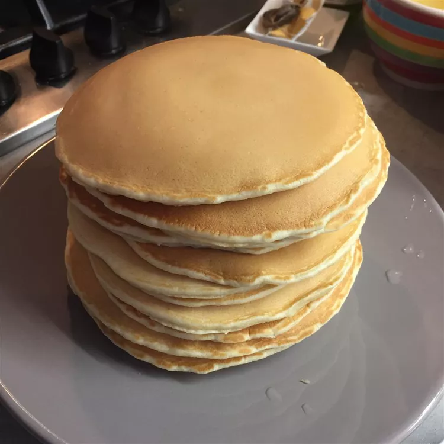

Extra-Yummy Fluffy Pancakes
Back to home page

Description
Pancakes
Ingredients
- 1 ¼ cups all-purpose flour
- 1 ½ tablespoons white sugar
- 1 tablespoon baking powder
- 1 tablespoon ground cinnamon
- ¾ teaspoon salt
- 1 ⅓ cups milk
- 1 large egg, lightly beaten
- 3 tablespoons vegetable oil
- ¾ teaspoon vanilla extract
- 1 teaspoon vegetable oil, or as needed
Directions
- Whisk together flour, sugar, baking powder, cinnamon, and salt in a large bowl. Whisk in milk, beaten egg, 3 tablespoons vegetable oil, and vanilla until only a few lumps remain. Let batter stand for 5 full minutes for extra fluffiness.
- Heat a griddle over medium heat and brush with 1 teaspoon vegetable oil. When oil shimmers, slowly pour about 1/4 cup batter onto the hot griddle and cook until bubbles form and the edges are dry, about 2 minutes. Flip and cook until browned on the other side, about 2 minutes more. Repeat with remaining batter.